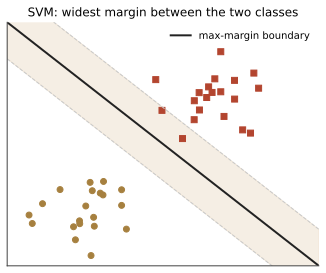

本讲目录
第 02 讲 · 感知机与支持向量机
诞生场景：1957 年，心理学家 Rosenblatt 造出感知机（Perceptron），号称能"学习识别"——《纽约时报》当年的报道说它将来能走路、说话、有意识。这是第一个真正意义上"从数据学出分类器"的算法。而 40 年后，SVM 用严格的数学回答了感知机悬而未决的问题："这么多条能分开数据的线，哪条最好？"——并把核技巧纳入最大间隔框架，成为 1995–2010 年间机器学习的主流方法之一，在不少任务上压过了当时的神经网络（第 04 讲讲这段恩怨）。
学习层：哪条线真的“最宽”？
具体数据谜题：这六个点的路最宽在哪里？
先固定一组二维数据：正类是 \((2,2),(2,3),(3,2)\)，负类是 \((-2,-2),(-2,-3),(-3,-2)\)。请先不算导数，猜一条能分开它们的直线，再猜哪一个单位法向量方向能让两类投影之间的空隙最大。
先做预测，再转动法向量
把候选线暂定为 \(x_1=0\)：你预计最近点会有几个？把单位法向量从水平转向对角线时，最小 signed margin 会增大还是减小？注意，候选线上的最近点暂时只叫“最近点”；只有找到全局最优的硬间隔线后，才把压在间隔边界上的点叫支持向量。
最小模型：方向、阈值、两种间隔
实验只调单位法向量 \(w=(\cos\theta,\sin\theta)\) 与偏置 \(b\)，分界线为 \(w^\top x+b=0\)。每个点的 signed margin 是 \(m_i=y_i(w^\top x_i+b)\)，当前最小几何间隔是 \(\min_i m_i/\lVert w\rVert\)；本实验固定 \(\lVert w\rVert=1\)，所以两者数值相同（错分时这个带符号的最小值为负）。
同一条线可以写成 \((w,b)\) 或 \((cw,cb)\)（\(c>0\)）：函数值和 signed margin 会乘以 \(c\)，但几何间隔要除以新的 \(\lVert cw\rVert\)，所以不变。单位范数只是去掉这个冗余标度，不是另一个分类器。
把“寻找最大间隔”写成投影实验
令投影阈值 \(t=-b\)。对一个单位方向，计算正类最小投影 \(p_{\min}=\min_{y_i=+1}w^\top x_i\) 与负类最大投影 \(n_{\max}=\max_{y_i=-1}w^\top x_i\)。若 \(p_{\min}-n_{\max}>0\)，该方向有可行阈值；使两边最近投影等距的阈值是 \(t^*=(p_{\min}+n_{\max})/2\)，半间隙是 \((p_{\min}-n_{\max})/2\)。实验命令逐个枚举固定网格方向，取半间隙最大的方向，并报告比较过程。
实验：转动、平移，再让算法寻找
静态后备：数据为正类 \((2,2),(2,3),(3,2)\)、负类 \((-2,-2),(-2,-3),(-3,-2)\)。候选线 \(\theta=0^\circ,b=0\)（\(x_1=0\)）的 signed margins 按上述顺序为 \(2,2,3,2,2,3\)，最小几何间隔为 \(2\)，四个最近点是 \((2,2),(2,3),(-2,-2),(-2,-3)\)；它们不是本实验约定下的支持向量。枚举得到 \(\theta^*=45^\circ,b^*=0\)，此时 \(p_{\min}=2\sqrt2\)、\(n_{\max}=-2\sqrt2\)，半间隙/最小几何间隔为 \(2\sqrt2\)；只有 \((2,2)\) 与 \((-2,-2)\) 压在两条间隔线上，称支持向量。
误区与边界：图上“离得远”不等于无条件泛化
- 本 lab 只在固定二维、线性可分数据上比较直线；枚举网格是可复现的离散搜索，不替代一般凸二次规划，也不处理核或软间隔训练。
- \(m_i<0\) 表示错分，\(m_i=0\) 表示点落在线上；只有全部分类正确时，最小 signed margin 才能直接解释为分界线到最近样本的正距离。
- “间隔越大越简单”需要条件：例如输入范数被半径 \(R\) 有界、采用明确的规范化和假设空间时，经典 margin complexity / fat-shattering 界通常给出 \(R^2/\gamma^2\) 量级的控制；常数、对数项和是否讨论 VC 维取决于具体定义，不能当作无条件的 VC 维等式。
回到原问题：从实验线到 KKT
对最优单位方向，实验给出 \(w=(1,1)/\sqrt2,b=0,\gamma=2\sqrt2\)。把它按功能间隔缩放为 \(\bar w=w/\gamma=(1/4,1/4),\bar b=0\)，就得到硬间隔原问题的约束 \(y_i(\bar w^\top x_i+\bar b)\ge1\)。两条边界上的 \((2,2)\) 与 \((-2,-2)\) 满足等号，其余四点严格大于 1。
因此互补松弛 \(\alpha_i[y_i(\bar w^\top x_i+\bar b)-1]=0\) 只允许边界点有正乘子；本数据取 \(\alpha_{(2,2)}=\alpha_{(-2,-2)}=1/16\)，同时满足 \(\sum_i\alpha_i y_i=0\) 与 \(\bar w=\sum_i\alpha_i y_i x_i\)。这正是实验里“最优时才叫支持向量”的 KKT 版本；对普通候选线，先称最近点。
迁移题：换数据或换规范后，哪些量还成立？
若把其中一个正类点移到 \((0,0)\)，哪些方向仍有投影间隙？若把一条同样的线改写成 \((2w,2b)\)，signed margin、几何间隔和支持点的判定各如何变化？最后说明：为什么非可分数据要转向带 \(\xi_i\) 的软间隔，而不能直接把这个硬间隔实验继续“调”下去？
1. 线性分类器：最简单的假设空间
设定：二分类，\(x \in \mathbb{R}^d\)，\(y \in \{+1, -1\}\)。假设空间取线性函数：
几何图像：\(w^\top x + b = 0\) 是一张超平面，\(w\) 是它的法向量，\(b\) 控制平移；超平面把空间切成两半，一半判正一半判负。找函数 = 找 \((w, b)\)。
2. 感知机：第一个学习算法
感知机的策略朴素到令人感动——犯错就修正：
- 初始化 \(w = 0,\ b = 0\)；
- 逐个看样本，若 \((x_i, y_i)\) 被分错（即 \(y_i(w^\top x_i + b) \leq 0\)），更新：
- 重复扫数据，直到没有错分点。
更新的几何直觉：分错说明 \(w\) 与"正确方向"夹角太大，往 \(y_i x_i\) 方向掰一把，掰完之后该点的函数值 \(y_i(w^\top x_i + b)\) 增加了 \(y_i^2(x_i^\top x_i + 1) = \|x_i\|^2 + 1 > 0\)，即朝正确方向前进了一步。
2.1 Novikoff 收敛定理（完整证明）
这个看似随意的算法有个漂亮的保证。
定理（Novikoff 1962）：把偏置严格纳入增广空间，令 \(\tilde x_i=(x_i,1)\)、\(\tilde w=(w,b)\)，并设存在单位增广向量 \(\tilde w^*\)（\(\|\tilde w^*\| = 1\)）和间隔 \(\tilde\gamma > 0\) 使得所有样本满足 \(y_i\tilde w^{*\top}\tilde x_i \geq \tilde\gamma\)；再设 \(\|\tilde x_i\| \leq \tilde R\)。则对增广感知机的总更新次数至多为
这里的 \(\tilde R\)（若把它简写为 \(R\)）必须对应增广向量 \(\tilde x_i\)，不能直接拿原始 \(\|x_i\|\) 的上界代替；若固定偏置为 0，才退化回不带增广坐标的写法。
证明：设总共发生 \(K\) 次更新，第 \(t\) 次误判样本为 \((x_t,y_t)\)（\(t=1,\dots,K\)）。写成增广样本后，令 \(\tilde w_0=0\)，并按 \(\tilde w_t=\tilde w_{t-1}+y_t\tilde x_t\) 更新。我们从两个方向夹逼 \(\|\tilde w_K\|\)。
下界（每次更新都在正确方向上累积）：
对 \(t=1,\dots,K\) 累加：\(\tilde w_K^\top \tilde w^* \geq K\tilde\gamma\)。由 Cauchy–Schwarz，\(\|\tilde w_K\| \geq \tilde w_K^\top \tilde w^* \geq K\tilde\gamma\)。
上界（每次更新长度增长有限）：
其中中间项 \(2y_t\,\tilde w_{t-1}^\top \tilde x_t \leq 0\)，因为这个点当时被分错了。对 \(t=1,\dots,K\) 累加得 \(\|\tilde w_K\|^2 \leq K\tilde R^2\)。
两边夹：\(K^2\tilde\gamma^2 \leq \|\tilde w_K\|^2 \leq K\tilde R^2\)。若 \(K>0\)，约去一个 \(K\) 得 \(K\leq \tilde R^2/\tilde\gamma^2\)；若 \(K=0\) 则结论显然。\(\blacksquare\)
三点回味：
- 收敛次数与维数 \(d\) 无关，只依赖增广空间里的几何量 \(\tilde R/\tilde\gamma\)——"间隔"这个量首次登场，它将是 SVM 的灵魂；
- 数据不可分时，感知机永不停机、来回震荡——这是它的死穴之一；
- 可分时解有无穷多个，感知机停在哪条线取决于样本顺序，纯属偶然——这是死穴之二，也是 SVM 的出发点。
3. 支持向量机：哪条分界线最好？

同样一份可分数据，能画无数条分界线：有的贴着正类样本，有的贴着负类。直觉上，离两边都尽量远的那条更能抵抗小的输入扰动。第 01 讲的泛化理论支持这个直觉，但要加条件：当输入范数被半径 \(R\) 有界、偏置纳入增广空间且规范化约定明确时，经典 margin complexity / fat-shattering 界通常给出 \(R^2/\gamma^2\) 量级的控制（常数、对数项和 VC 维的精确定义依具体定理而变）；这不是无条件的 VC 维等式。
3.1 从几何间隔到原问题
点 \(x_i\) 到超平面 \(w^\top x + b = 0\) 的距离是 \(\dfrac{|w^\top x_i + b|}{\|w\|}\)。对正确分类的点，\(|w^\top x_i + b| = y_i(w^\top x_i + b)\)。定义整个数据集的几何间隔为最近点的距离：
SVM 的目标：最大化 \(\gamma\)。注意 \((w, b)\) 同乘常数 \(c>0\) 不改变超平面也不改变 \(\gamma\)——存在一个冗余自由度。利用它做规范化：令最近点满足 \(y_i(w^\top x_i + b) = 1\)（即约束右端定标为 1），则 \(\gamma = 1/\|w\|\)，最大化间隔等价于：
（取 \(\frac12\|w\|^2\) 而非 \(\|w\|\) 是为了求导好看。）这是一个凸二次规划：目标凸、约束线性——在这个凸优化问题中，局部最优即全局最优，没有神经网络那种"卡在坏解"的麻烦。这是 SVM 在 90 年代大受欢迎的原因之一：它是能被彻底理解的。
3.2 拉格朗日对偶（完整推导）
直接解原问题可以，但对偶形式会揭示两件深刻的事：在硬间隔最优解中，解可由少数边界样本表达；以及数据只以内积形式出现——后者是核方法的入口。
引入乘子 \(\alpha_i \geq 0\)，拉格朗日函数：
原问题等价于 \(\min_{w,b} \max_{\alpha \geq 0} L\)（若某约束被违反，内层 max 可把 \(L\) 推到 \(+\infty\)，故外层 min 必须满足全部约束）。对偶问题是交换 min 与 max：\(\max_{\alpha \geq 0} \min_{w,b} L\)。由于原问题是凸且严格可行（Slater 条件），强对偶成立，两者最优值相等。
内层对 \(w, b\) 求最小：置偏导为零，
第一式已经很有信息量：最优的 \(w\) 是样本的线性组合，系数是 \(\alpha_i y_i\)。把两式代回 \(L\)：
得到对偶问题：
盯住一个事实：数据 \(x\) 只以内积 \(\langle x_i, x_j \rangle\) 的形式出现。 先记下，第 4 节引爆它。
3.3 KKT 条件与支持向量
强对偶成立时，最优解满足 KKT 条件，其中互补松弛条件是：
即对每个样本，\(\alpha_i\) 和"约束的松弛量"至少有一个为零。分两类：
- \(y_i(w^\top x_i + b) > 1\)（严格在间隔外侧的点）\(\Rightarrow \alpha_i = 0\)：对 \(w\) 毫无贡献；
- \(\alpha_i > 0 \Rightarrow y_i(w^\top x_i + b) = 1\)：这个点恰好压在间隔边界上，称为支持向量（support vector）。
于是 \(w = \sum_{i \in SV} \alpha_i y_i x_i\)。在硬间隔问题中，这意味着严格位于间隔外的样本不改变已满足约束的最优解；在软间隔问题中，\(\alpha_i=C\) 的违例点也可能进入这个集合。几何上，硬间隔的边界由少数样本决定；\(b\) 可由任意满足等式的边界支持向量解出：\(b = y_k - w^\top x_k\)。
3.4 软间隔：现实数据不可分
真实数据有噪声、有离群点，硬性要求全部分对既不可能也不明智（一个标错的点就能毁掉整个间隔）。引入松弛变量 \(\xi_i \geq 0\) 允许违规，但违规要付钱：
\(C > 0\) 是"违规罚款单价"。只有在线性可分、硬间隔约束确实可行时，\(C \to \infty\) 才会逼近硬间隔解；非可分数据没有可行的硬间隔问题，增大 \(C\) 不能让它“退回硬间隔”，只是更重地惩罚训练约束的违例。\(C\) 较小时通常更宽容，但间隔、偏差与方差的变化还依赖数据尺度、模型和损失权重。这正是第 01 讲正则化滑块的 SVM 版本。 对偶推导流程完全一样（自己推一遍，好练习），结果只差一处：约束从 \(\alpha_i \geq 0\) 变成
另一个等价视角：消去 \(\xi_i\)（最优时 \(\xi_i = \max(0,\, 1 - y_i(w^\top x_i + b))\)），并把原目标除以正数 \(nC\)，可写成无约束形式
——SVM = hinge 损失 + L2 正则的 ERM，完美嵌回第 01 讲的"损失 + 正则"框架。hinge 损失是 0-1 损失的凸上界；0-1 损失不连续且非凸，不能直接用普通梯度优化，hinge 是它"可优化的替身"。用凸的替代损失逼近 0-1 损失，这个思想同样支撑着逻辑回归（用交叉熵）和神经网络。
4. 核技巧：升维打击
4.1 动机：线性分不开怎么办
XOR 型数据（第 01 讲末尾的预告）：正类在 \((0,0), (1,1)\)，负类在 \((0,1), (1,0)\)——任何直线都无法分开。但做一个特征映射 \(\phi(x) = (x_1, x_2, x_1 x_2)\) 升到三维，超平面 \(x_1 x_2 = \text{常数}\) 类的分界就轻松解决。一般规律：低维线性不可分的数据，映到足够高维后往往线性可分（Cover 定理：\(N\) 个点在 \(d\) 维随机标注，\(d\) 越大线性可分概率越高）。
问题是代价。想在 \(\mathbb{R}^{100}\) 上用全部三阶多项式特征，\(\phi(x)\) 的维数是 \(\binom{103}{3} \approx 1.8 \times 10^5\)；阶数再高直接爆炸，更别说无穷维。
4.2 核技巧本体
回到 3.2 节记下的事实：对偶问题和预测函数里，数据只以内积形式出现：
所以根本不需要算出 \(\phi(x)\) 本身，只需要能算映射后的内积：
如果有一个函数 \(K\) 能直接给出这个值，\(\phi\) 是几维、甚至是不是无穷维，都无所谓。例：取 \(K(x,z) = (x^\top z)^2\)，\(x, z \in \mathbb{R}^2\)，展开验证：
其中 \(\phi(x) = (x_1^2, \sqrt{2}\,x_1 x_2, x_2^2)\)。算 \(K\) 只要一次内积加一次平方（\(O(d)\)），算 \(\phi\) 再内积是 \(O(d^2)\)；多项式核 \(K(x,z) = (x^\top z + c)^p\) 对应的 \(\phi\) 有 \(\binom{d+p}{p}\) 维，而算 \(K\) 永远是 \(O(d)\)。用低维的计算量，买到高维的表达力——这就是核技巧（kernel trick）。
最著名的是高斯核（RBF 核）：
因为 \(\|x-z\|^2=\|x\|^2+\|z\|^2-2x^\top z\)，先完整分解为
再展开最后一个因子：
前两个随单个点变化的高斯因子必须保留；把它们分别乘到两侧的特征坐标上，再把每个 \((x^\top z)^k\) 展成 \(k\) 阶单项式特征，就得到一个无穷维特征映射 \(\phi\)。一台 90 年代的电脑，就这样在无穷维空间里训练线性分类器。
4.3 什么样的函数能当核？Mercer 定理
不是随便一个二元函数都是某个 \(\phi\) 的内积。Mercer 定理（有限点集版）：\(K\) 是合法核 \(\iff\) 对任意有限点集 \(\{x_1, \dots, x_n\}\)，Gram 矩阵 \(G_{ij} = K(x_i, x_j)\) 对称半正定。
必要性：若 \(K(x,z) = \langle\phi(x), \phi(z)\rangle\)，则对任意 \(c \in \mathbb{R}^n\)，
充分性（有限维情形）：\(G\) 对称半正定则可谱分解 \(G = U \Lambda U^\top\)（\(\Lambda \geq 0\)），取 \(\phi(x_i) = \Lambda^{1/2} U^\top e_i\) 即得 \(\langle\phi(x_i), \phi(x_j)\rangle = G_{ij}\)。一般情形把求和换成积分算子的谱分解（Mercer 1909），构造出的特征空间称为再生核希尔伯特空间（RKHS）。\(\blacksquare\)
半正定性也保证了对偶问题仍是凸的（目标中的二次型 \(-\frac12 \alpha^\top (\text{diag}(y)\, G\, \text{diag}(y))\, \alpha\) 凹），凸性的免费午餐得以保留。
核方法的历史地位
1995 年软间隔 SVM（Cortes & Vapnik）+ 核技巧 + 严格的统计学习理论（VC 理论正是 Vapnik 的作品）三位一体，让 SVM 成为 1995–2010 年的主流方法：手写数字、文本分类、生物信息，处处是它。同一时期神经网络理论上说不清、调参靠玄学，在学术界几乎被扫进故纸堆——只有少数人还在坚持（第 04 讲）。而核方法的局限也埋在它的优雅里：核矩阵 \(n \times n\)，样本到百万级就存不下算不动；特征仍然是"人选核函数"而非"从数据学出来"。这两条短板，正是深度学习后来翻盘的地方。
5. 多分类怎么办
SVM 天生二分类。多分类的标准做法：一对其余（One-vs-Rest）训练 \(K\) 个二分类器取分数最高者，或一对一（One-vs-One）训练 \(\binom{K}{2}\) 个投票。（对比之下，第 03 讲的决策树和贝叶斯天生多分类，第 04 讲的神经网络用 softmax 天生多分类——这是 SVM 的一个小别扭。）
本讲小结
| 概念 | 一句话 |
|---|---|
| 感知机 | 犯错就修正；可分时按增广量 \(\tilde R^2/\tilde\gamma^2\) 控制更新次数（Novikoff） |
| 最大间隔 | 在所有可分超平面里选离两类都最远的——在输入有界等条件下有更强复杂度控制 |
| 对偶 | \(w = \sum \alpha_i y_i x_i\)；数据只以内积出现 |
| 支持向量 | 硬间隔最优解的边界点；软间隔中 \(\alpha_i=C\) 的违例点也可能参与模型 |
| 软间隔 | hinge 损失 + L2 正则；\(C\) 是过拟合滑块 |
| 核技巧 | 只算 \(K(x,z)\) 不算 \(\phi\)；低维计算量买无穷维表达力 |
| Mercer | 合法核 \(\iff\) Gram 矩阵半正定 |
动手：跑 labs/lab02_perceptron_svm.py——从零实现感知机看它收敛，再用 sklearn 的 SVM 对比线性核与 RBF 核的决策边界，把支持向量圈出来，最后调 \(C\) 和 \(\sigma\) 观察过拟合。
延伸阅读：李航《统计学习方法》第 2、7 章（中文里最清楚的 SVM 推导）；Burges "A Tutorial on Support Vector Machines" (1998)。
下一讲换一条思路：不画分界线了。用"一连串 if-else 问题"分类（决策树），或者干脆直接对第 01 讲的贝叶斯最优分类器建模（朴素贝叶斯）。顺便回答一个深刻的小问题：为什么信息要用 \(-\sum p \log p\) 度量？